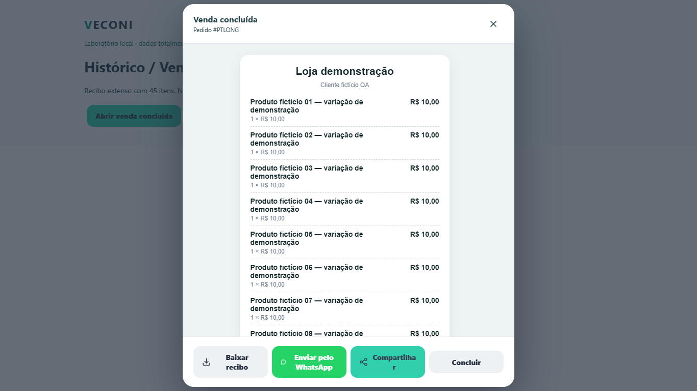
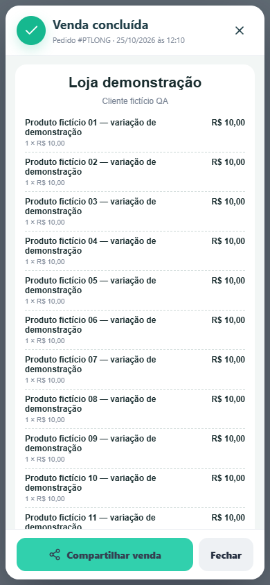
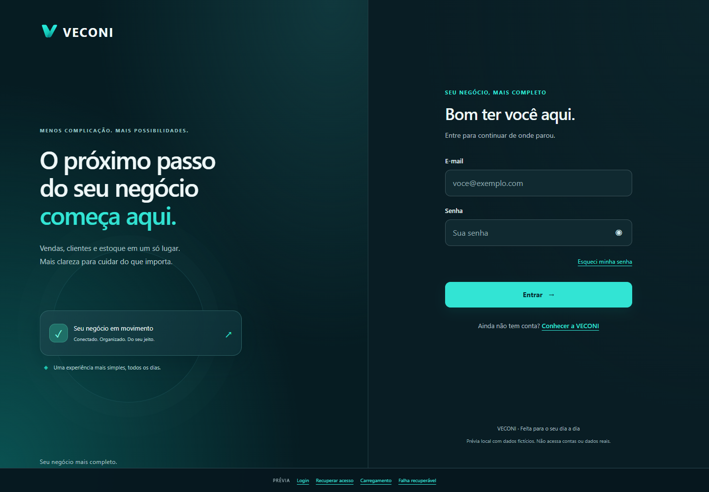
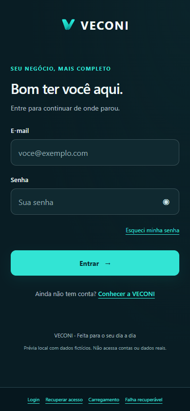
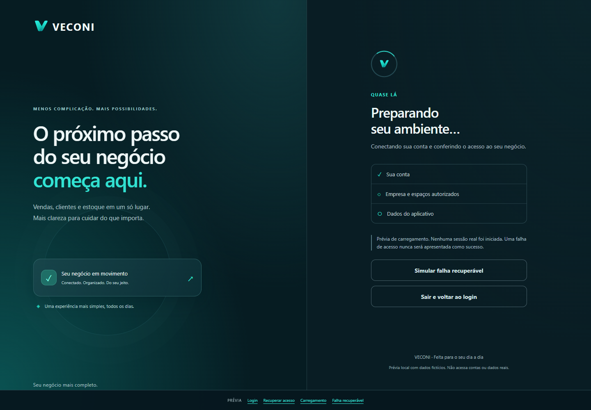
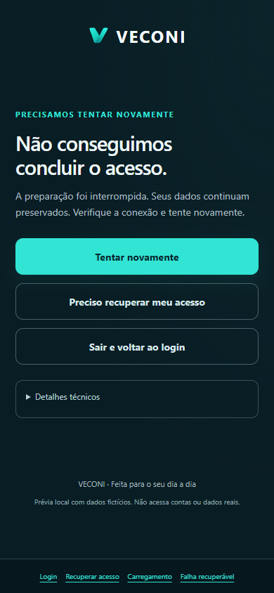
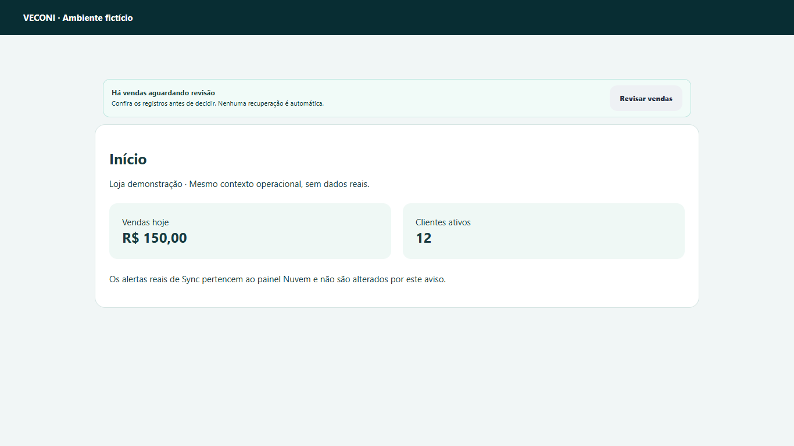
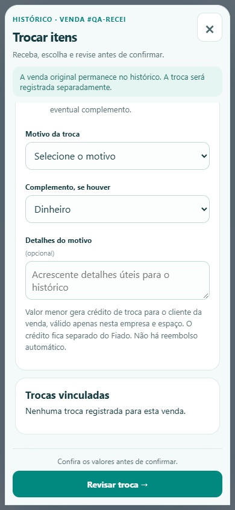
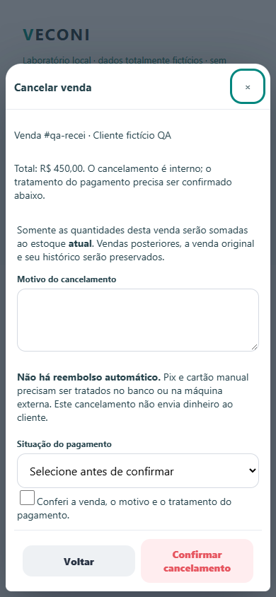

Mais espaço para o que importa.
Correções locais de modais e revisão de vendas. Novo acesso somente como proposta visual, sem integração à autenticação.
Dados fictícios. Nenhuma publicação, venda, alteração de permissões, fila ou dado comercial.
Venda concluída: conteúdo rolável, ações acessíveis




Nova apresentação do acesso · somente prévia




Carregamento e recuperação continuam claros




Revisão real: aviso compacto

Outros formulários longos




Zoom validado por reflow equivalente no Chromium isolado. Teclado por redução do viewport. A validação física Android/iOS não foi realizada.